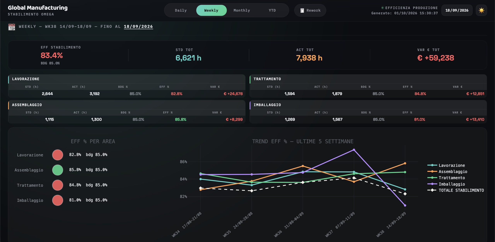

01. Plant Efficiency Dashboard
- Problem
- Daily efficiency reporting relied on macro-heavy Excel files rebuilt by hand, causing data latency and bottlenecks.
- Solution
- A Python pipeline generates one self-contained page with standard vs actual hours, efficiency against budget, and € variance, from daily to YTD.
- Result
- A plant meeting opens one instantly-loading link instead of downloading a spreadsheet.
PYTHONPANDASPLOTLYVANILLA JS